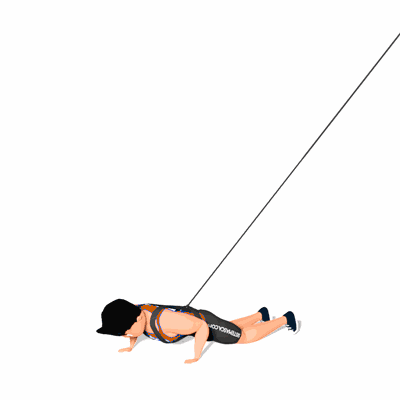

Burpee com Tração Elástica

Exercício de resistência elástica que trabalha diversos músculos do corpo. Estimula também a coordenação motora, força muscular, potência e resistência.
Ficha Técnica
Tipo: Aeróbico
Grupo Muscular: Corpo
Aparelho: Nenhum
Músculos: Nenhum
Como realizar
- Prenda o colete de tração elástica em seu tronco;
- Em pé, com as pernas na linha dos ombros;
- Abaixe-se, realizando um agachamento, com as mãos ao lado do corpo buscando o chão e sem apoiar os calcanhares;
- Jogue seus pés para trás numa posição de prancha, com os braços estendidos;
- Volte à posição de pernas próximas ao tronco e, a partir dela, salte o mais alto possível;
- Volte à posição inicial e repita os movimentos.
 RC STORE
RC STORE